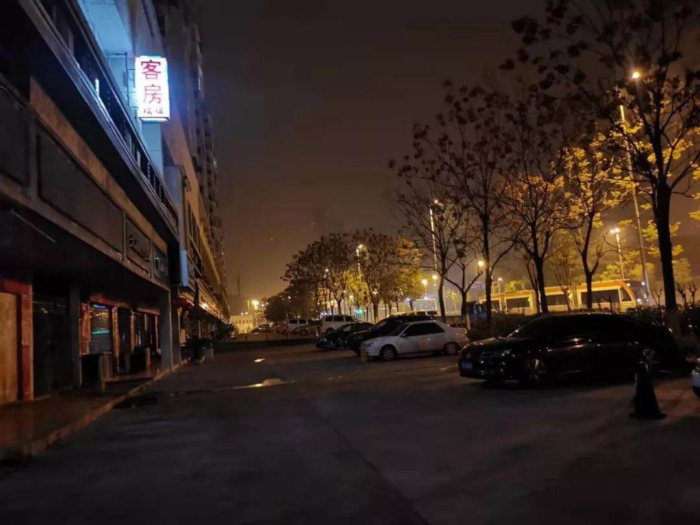
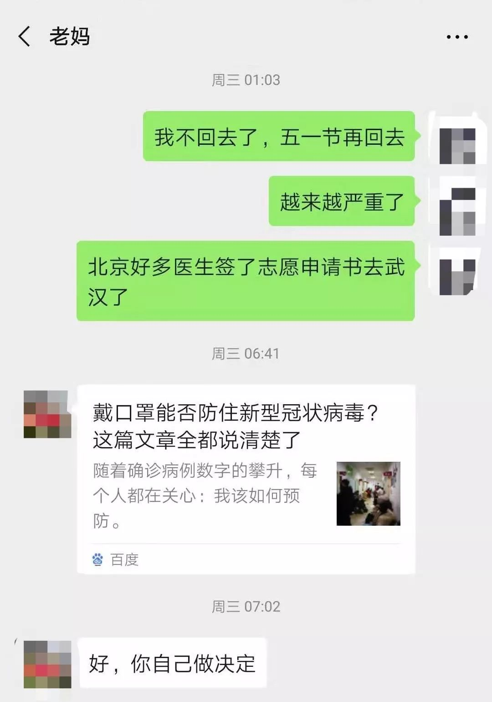
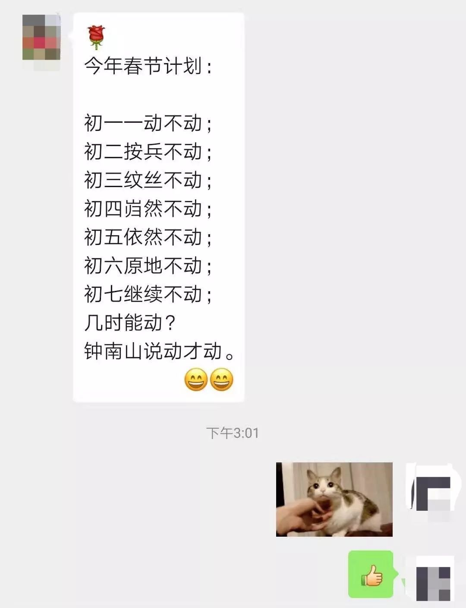
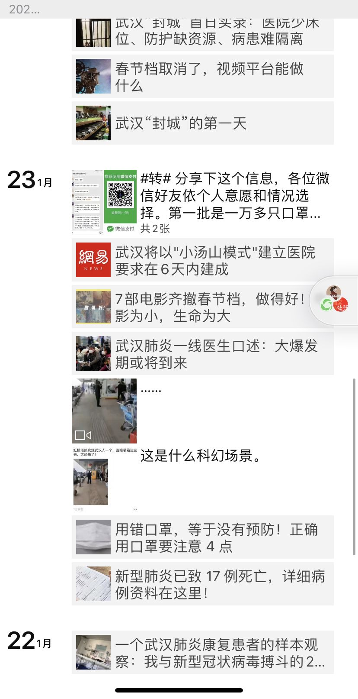
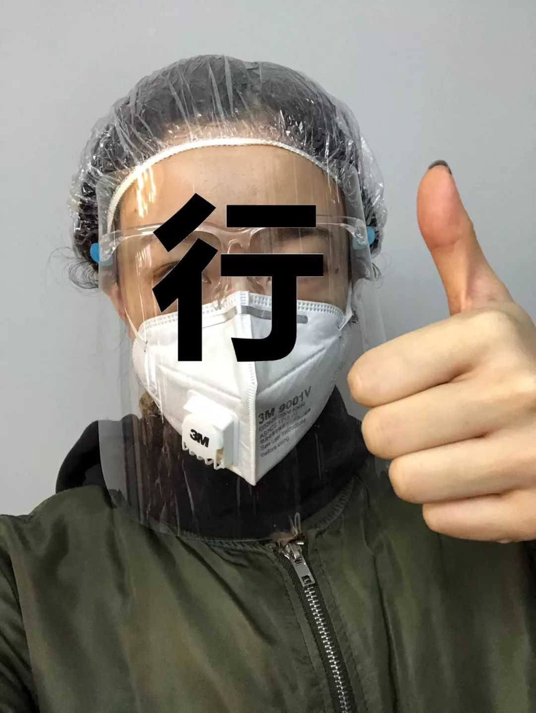

不止有武汉：湖北疫区17城实录（下篇）
原文链接 备份链接 这是一场无法预知开始、但也许可以看到结局的抗击疫情特殊战役，它不仅仅是疫情爆发地汉口的战役，更是武汉及周边，湖北、乃至全国的战役 文 |《财经》记者 房宫一柳 黎诗韵 管艺雯 宋玮 高洪浩 余洋洋 陈晶 实习生 张凡 …
大家好，我是田静。
这几天因为新型冠状肺炎病毒，我恶补了一些相关书籍，再看网上真假难辨的信息，觉得阿尔贝‧加缪的《鼠疫》中说得很对：“我们每个人心里都有瘟疫，没有一个人，这世界上没有一个人是免除得了的。能够对抗瘟疫的，就是正直。”
武汉人并不是病毒，他们只是倒霉版的你。离开武汉的500万人中，固然有一部分是恐慌出逃的，但大部分是疫情程度被隐瞒时，正常的春节返乡、学生放假、候鸟老人去海南等平凡如你我的人。
我们联系到了一些来自湖北的女孩，她们分享了这些天的经历，在这场突袭战中，她们冷静、勇敢而又温润、善良，比起病毒，更让她们难受的，是网络上对武汉人的谩骂。
今天，我想对每一个勇敢女孩说，天亮之前，有一个时间是非常暗的，星也没有，月亮也没有，但天一亮，阳光就会照进来。
我们坚信，寒冬即将过去，阳光很快就会到来，这是自然界不变的规律。
▌我家里一个亲戚，确诊两天后去世了
大家可以叫我口罩，因为最近真的快被口罩给逼崩溃了。
我家就在武汉蔡甸区，也就是「火神山」医院的所在地，离医院大概就17分钟的车程。
△今天是武汉火神山医院施工的第4天。这张照片，是1月26日中午1点左右施工现场航拍图。火神山医院预计2月2日整体移交军方管理，预计床位700到1000张。
我是在元旦前一天，看到政府通知，说有人感染不明原因的肺炎。当时并没有感觉到情况有多严重。
直到钟南山院士说，肺炎会人传人，我开始变得非常焦虑。就在前一天，我在地铁里戴口罩，还感觉自己像个奇葩。
第二天，武汉的氛围急转直下。地铁里的情况完全不一样了，都戴上了口罩。
我焦虑主要是因为家里开店，一直有人进出，我在店里帮忙，心里特别慌。我早就劝我爸关店，就是不听。
劝长辈戴口罩，一开始他们也不听，很烦心。
后来知道有个经常来店里的人，咳嗽发烧，去医院了。吓得我半夜去买了84消毒液，把店里里里外外全消毒完。
做完这些，我跟我爸说了，他估计是怕了，才决定关门歇业。那天已经是1月23号，就是封城的当天。
当天上午10点，武汉封城消息出来，我心态就崩溃了。
就是止不住刷手机看微博，更新疫情信息，越看越焦虑。觉得看谁都是病原体，都带着病毒。
只要不刷微博，就感觉还好，不会很焦虑。
口罩、消毒液、体温计什么的，都是我自己买。之前在京东上抢了两箱，N95的，一共50个。超市里和便利店也有一点，但总觉得不够。
便利店口罩的价格，涨到了平时的三倍。
平时5块一个，现在15块一个。当时营业员说价格的时候，旁边送货的都惊了，说了句，这么贵。
这些天最让我难过的，其实不是病毒，是微博针对武汉人的评论，真的太难听了。
大家不知道，封城那天，我六点多出门购物，准备囤些食物。那么大的一个城市，就像电影里的镜头一样，空寂无人，像个死城。他们怎么能骂武汉人？我们也是受害者。

△23号封城当天，凌晨6点的武汉蔡甸开发区
政府说封城就封城，什么应急措施都没有做，很多人都买好了回家的票了，可第二天一醒，发现根本回不去了。
整个武汉的氛围都蛮让人致郁。
发现「小汤山」医院要在我家这里建的时候，一开始还以为是假的……因为这个位置附近真的还有很多居民区。
我附近的同学也都很恐慌。但奇怪的是，对这个选址，微博上一片祥和。这时候除了害怕，更多是无奈。
除夕晚上，家里人聚餐，我没去，不想去。
我总感觉自己被感染了，什么都提不起兴趣。每天就是跟同学聊天看电视，饭也不想吃。
再后来，我爸告诉我家里一个亲戚走了。说他医院确诊后回家了，两天后就去世了。
他六十多岁，家就在「华南海鲜市场」附近。去世时打了120，但120没来。
他就在自己家里去世的。家里人说「烧了」，应该是送去火化了。之后葬礼都没办。
他的家人还在自己家隔离。我去查当天的疫情通报的信息，没有这个人。
应该是在医院死亡的人，才计入统计。所以他根本没有被算进去。
这场病注定要载入史册的，被它感染死的病患却没有被记录，也没有人为他送行，想到这里我觉得很难受。
我现在正在读研究生，希望能活到下个学期……
▌我妈朋友的孩子初六婚礼，取消了
我叫欣欣，老家湖北黄石，一直在北京工作， 计划是22号飞回武汉。
我是在一月初的时候，就知道新型病毒的事，以前也有过鸡、猪的流感，所以这次也只觉得是一般的小问题。
真正发现情况严重是21号从崇礼滑雪回来，路上高铁地铁全是戴口罩的，新闻也比之前更频繁更严重，晚上跟我妈视频，说明天不想回家了，事情发展的太迅速。

△ 人民日报，黄石客运停运的报道
我妈还是比较理解，前面说行，但又不停跟我说，准备了好多吃的，每五分钟又弹个视频，说还是回吧，路上做好防护，因为是过年，我想想于心不忍，还是答应了。
没想到，第二天一到登机口，全是全副武装的人。出口的时候有红外线的排查，对着脑门测体温。我忐忑不安回到家后，听到武汉要封城的消息，就知道已经很严重了。
白天约的朋友局，到晚上已经没人再提这事了。
1月24号早晨，黄石所有公交，大桥，高速要停运，好在高铁还没封，当时我还想着赶紧走，买了初二下午黄石到北京的动车（我到北京肯定会自行隔离的），下午就看到新闻，黄石火车站也关闭了。
随后，武汉“封城”，所有的交通工具都关闭了，我也彻底死心了，就想着既来之则安之。
还得在家呆至少半月，带的衣服回来穿不上，护肤品根本不够用了。

△ 宅在家里的我
也没法买，好多大超市已经通知关闭，也没说开的日子，没有公交和出租车，一切出行都是能用脚到了的地方。
我们家那些私人水果小超市有些还开着，但是都没人，只有药店哗啦啦不停进人，估计很多都是看了新闻去买口罩了。
我妈朋友的孩子初六结婚，我妈还跟我讨论要不要去，我说肯定会取消的，结果真取消了。
每天看着新闻我都觉得上头，数着我从北京回来的日子过，感觉自己也在隔离期。好好的春节过的这般糟心，不知道何时解封。
还想回北京去滑雪，昨儿看见南山雪场发不接湖北籍的消息，心凉凉啊。
▌我囤了一千个口罩，化好妆准备打120
我住在武汉柏泉，年三十，离汉通道都已经关了，但是柏泉的年味依然很浓，也就是说，还没有什么人戴口罩。
但我早已经在家屯了一千多个口罩，和一年份的食粮储备。菜市场早就开始查封消毒，但是中百超市还能买到很多蔬菜，一次多屯一点，也不用担心维生素的问题。


△ 我囤的物资
这中间还有谣言说大白菜卖到5块一斤，害我赶紧跑出去看了一眼，发现根本就是假消息。这些造谣传谣的人太可恶了，之前还有说中部战区空军要播撒消毒粉之类的，一到这种时候，谣言似乎就止不住地被制造出来，唉。
现在不看那些谣言，真实情况也已经很严重了，武汉学校也推迟开学了。我本身是一家艺术培训学校的校长，我给老师们也都无限延长了假期，看什么时候疫情减弱再开始上班吧。
今年学校还有两个老师要结婚，我一月初就感觉不太对，让他们早些回去了。他们家也是武汉的，在蔡甸，婚期定在大年二十九，那会都已经封城了，全市都在戒严，但是他们家人竟然在蔡甸兴高采烈地举行了婚礼！
新郎和新娘都没去参加，只有两家家人去了，说看好了日子，搭了棚子，酒席也请了厨师，干脆当年夜饭。我知道之后气坏了，直接把他们的家人一通批评，现在这种情况还敢聚会，新郎新娘怎么想？你们开心，他们落寞？
我在年二九那天也发了低烧，37°1，当时要求37°3以上的病人到指定医院就诊，我洗了头发，化了妆，打算如果再高一点就打120。
还好后来没有再发展，我按照协和医院出的《协和解决方案》的医疗建议吃了药，没过几天就好了，应该只是呼吸道感染。其实现在也有点怕去医院，万一交叉感染，还不如不去呢。
这中间还有个小插曲，我病了之后，一直让我男朋友戴口罩，他死活不戴，气得我直接下楼买了个菜，要不是出了趟门，没准还能早两天退烧。
我跟男朋友妈妈说好了，要是家里再有谁生病，他还不戴口罩，就给他撵出去，不让进家门。

▌没有蔬菜，一包辣条每天吃三根，省着点
我是一家康复医院的康复训练师，一个人在武汉，住的地方距离发病的海鲜市场只有1.1公里，根本都不敢出门。
我还算知道消息比较早的，在家里屯了一些口粮，最近能不出去就不出去，而且这附近的超市每天都哄抢一空，我估计我也抢不上。


滑动查看更多图片
整件事情我最不明白的就是，为什么要瞒报病情？我的一个合作医生就是协和的骨科主任，协和人员不够用，他被安排去一线了，那会才十二月中旬。你知道协和有多大吗？十二月中旬医护人员就不够用了，可想而知病情严重到了什么程度。
而且十二月中旬就已经知道了可以人传人，有医护人员被感染，也知道发热不是唯一确定的标准了，当时协和就有确诊的肺炎病人并没有发热，但是这一切都在被隐瞒。不光普通市民，一线医护人员也被隐瞒，被强制谈话，不准说。
结果12月31号，江汉路七八万人，人挤人在倒计时跨年。
现在这种情况，作为普通人已经完全帮不上什么忙了，唯一能做的就是呆在家里，不要出门。网购也早已经停了，没有人来送东西，医护物资走的都是绿色通道。
现在外面天天都是救护车的声音，除了在医院门口排队的，街上几乎少有行人了。
我现在每天睡到中午，这样一天可以只吃两顿饭，没有蔬菜，维生素就靠膳食补充剂顶着，还能再管个两周。零食没有了，只剩一包辣条，昨天吃了三根，打算一天最多吃三根，省着点吃。

▌除夕夜，我独自点了个麦当劳，汉堡难吃，春晚更难看
我是21号中午临时决定不回去的，当时钟南山已经到了武汉，在新闻媒体公开建议大家别去武汉。而且武汉已经开始检查体温，只要有发热症状，就不让离开。
我家在湖北荆州市公安县，离武汉高铁只有2小时。北京到荆州的车次很少，我回家的话必须经过武汉，或者到武汉转车。而武汉当时是最危险的地方，我记得几乎全国所有已发病的，都是从武汉来的，我很担心带来麻烦。
湖北冬天比较冷，又没有暖气，我又是那种体质比较弱的，每次回家都要感冒。我怕万一有个感冒发烧的，免疫力降低，说不定就中招了，即使没中招，也肯定比较麻烦，所以就动了不回家的念头，打算五一再回家看他们。
我中午的时候，试探着跟我妈提了一下，她说让我自己做决定。22号凌晨1点多，我终于下定决心不回家，通知了她。

△ 22号凌晨，我决定不回家
在这之前，我只抢到一张北京到武汉的硬座，全程11个小时，高铁一票难求。
21号晚上8点多，突然多了很多北京到汉口（就是武汉疫情发源地）的高铁票，这些票直到第二天都没卖完，一直显示二等座都是99+。
我刚开始以为自己是个幸运儿，迅速下单抢票，感觉特别开心，还激动的截图发了朋友圈。
结果第二天我感觉不太对劲，这票怎么还没卖完？都没有人抢的吗？
因为这票时间特别好，北京上午9点半发车，下午3点到汉口。时间非常好的一趟车却没人抢，就感觉非常奇怪，我发现事情好像没那么简单，天上怎么可能掉馅饼给我呢？
而且抢票中间，因为汉口是疫情发源地的原因，我还退了一次票，想换到武汉中转，结果发现退票已经不收手续费了。我又上网看了看相关的新闻，发现事情好像越来越严重了，于是决定留在北京过年。
刚开始的时候，我家里人还不是很重视这个事，觉得大惊小怪。我提醒他们戴口罩，劝他们春节不出门，我妈一直都很敷衍。嘴上答应着不出门，转眼家族群里就发了她和亲戚们出门的消息。直到23号武汉开始封城，他们才意识到严重性，跟我说，幸好我没回来。

△ 主动给我发消息的我妈，思想觉悟提高不少
这几天荆州也开始封城，公务员挨家挨户入户调查登记，电话访问，娱乐场所也被关闭，大家都彻底在家歇着了。
我记得我们县城封锁的前一天下午，我大舅带着表弟表妹去上坟，给先祖点长夜灯，按照我们那边传统，除夕本来家里亲戚们都去的，但这次只有他们几个人去了。
舅舅回来后专门在家族群里点名说：XXX，XXX，XXX这些人都是孝子贤孙，其他人你们就只能蜗居在家祈祷列祖列宗的保佑吧。

△ 我们的家族群
放假前，我屯了一大堆吃的，速冻水饺，馄饨，蔬菜水果零食，还有5斤大米，做好了在家闭关的准备。
但后来我发现外卖一直都有，一个人也懒得做了。
除夕那天晚上，我定了个麦当劳，边吃边看春晚刷微博和朋友圈。
汉堡难吃的要死，热闹的春晚看的我很难受。
这两天我无时无刻不在关注家乡的信息，朋友圈分享了无数疫情的消息，我只希望一觉睡醒，看到的是好消息。



滑动查看更多图片

▌帮肝硬化的妈妈买药，穿得像要打丧尸
我叫佳佳，武汉人，现在正在武汉读研究生。
1月1号那天知道的疫情，到现在心态还比较好。之前为了招待客人买了很多食物，现在客人来不了，家里物资很充足，一个月没问题。
我们民众的物资其实还好，起码我家和亲戚朋友都囤够了东西，而且超市是营业的。但我没有进去，不知道里面货品怎么样。
我觉得我算幸运的，一是因为周边其它城市集中力量到武汉来了。二是因为家在武汉，本身为了过年准备了很多东西，不愁吃喝，不愁基本的消毒物品。
不过相对应的，湖北其它城市会比较惨——医疗条件不如武汉，但是可能感染的人数并不少，还得派医疗支援到武汉来。还有，那些家在外地被迫留在武汉的人，租房子没有冰箱的，我真的不知道他们怎么过。
25号，我迫不得已出门了一趟。因为我妈妈有肝硬化，需要每天吃药，一天都不能停，我需要帮她买药。根本不敢去医院了，只能去药店买。
我出门时，妈妈有点担心，但是我不可能不去，只好将防护做到极致。大家看，为了出门，我穿成了这样：

我家在远城区，比较偏。到街上一看，发现整个街上所有店都关了，车也没有，人也没有，那样子挺瘆人的，就是恐怖电影才有的画面。
我开了半个小时左右，才找到一家开着的药店。因为价格比较贵，没有买太多，但还是囤了一个半月的量，不知道这样出不了门的状况要持续多久。幸好那天去买了，第二天武汉所有机动车都禁行了。
我顺利回家后，妈妈很开心，能顺利找到药店不容易，我们里里外外用酒精消毒了，觉得还好，没有什么特别的。
这次疫情还有个特殊的情况，就是谣言特别多，对社会影响很不好。我的专业是传播学，有一门课的论文主题我就选的是「谣言」。
我准备把这次的谣言传播现象，列入研究计划。我会跟非典时的谣言现象做对比，好好研究一下。

△ 疫情爆发过程中，不断有谣言出来添乱，造成非常不好的社会影响 / 腾讯新闻「较真」辟谣平台
为中国女性安全 提供专业解决方案
▬ ▬ ▬ ▬ ▬ ▬ ● ▬ ▬ ▬ ▬ ▬ ▬
女 孩 别 怕
_未经授权 禁止转载
_
欢迎分享到朋友圈
原文链接 备份链接 这是一场无法预知开始、但也许可以看到结局的抗击疫情特殊战役，它不仅仅是疫情爆发地汉口的战役，更是武汉及周边，湖北、乃至全国的战役 文 |《财经》记者 房宫一柳 黎诗韵 管艺雯 宋玮 高洪浩 余洋洋 陈晶 实习生 张凡 …
原文链接 备份链接 🎧 点击上方图片，跳转「故事FM」小程序，收听真人讲述。记得添加「我的小程序」，一键收听全部故事哟！ 本来在春节前的最后一期节目里，我预告说 故事FM 会放假一周，节后回来再见。 但是这个春节啊，我们团队都无心过年，大 …
原文链接 备份链接 （图片来源：林晨同学Hearing） 一条拥有至少41万来自湖北的读者。 今天是大年初一， 我们完全没有心情过年。 过去两天， 我们一起经历了武汉正式封城， 后来湖北各市陆续传出封锁的消息， 全国多个省启动 重大公共突 …
原文链接 备份链接 图源B站UP主林晨同学自制视频 九位在武汉度过了除夕夜的普通人，他们从事着不同的职业，拥有不同的人生经历，但都在这座城市度过了可能是人生中最难忘的一个除夕。他们讲述的，不只是一个简单的夜晚，而是一场大疫之下，一个个普通 …
原文链接 备份链接 昨天是武汉封城第一天，三明治紧急发起了每日书特别版《武汉日常》，邀请人在武汉和家乡在武汉的朋友，一起来用文字忠实记录他们在这个特殊时期的生活日常。 招募一经发出，就有近百位朋友迅速响应，其中有一路哭着坚持回家过年的北 …